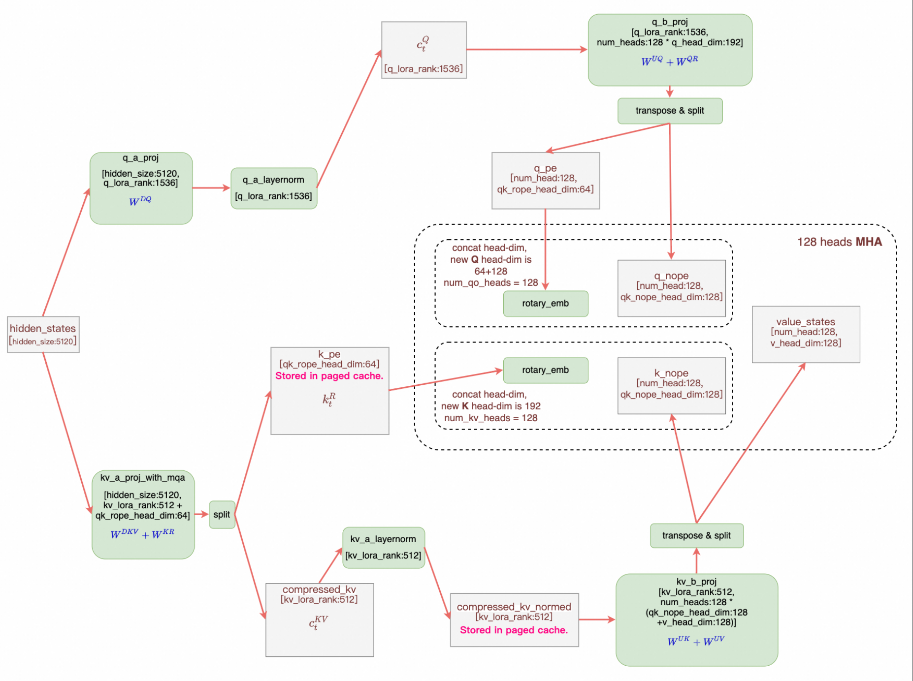
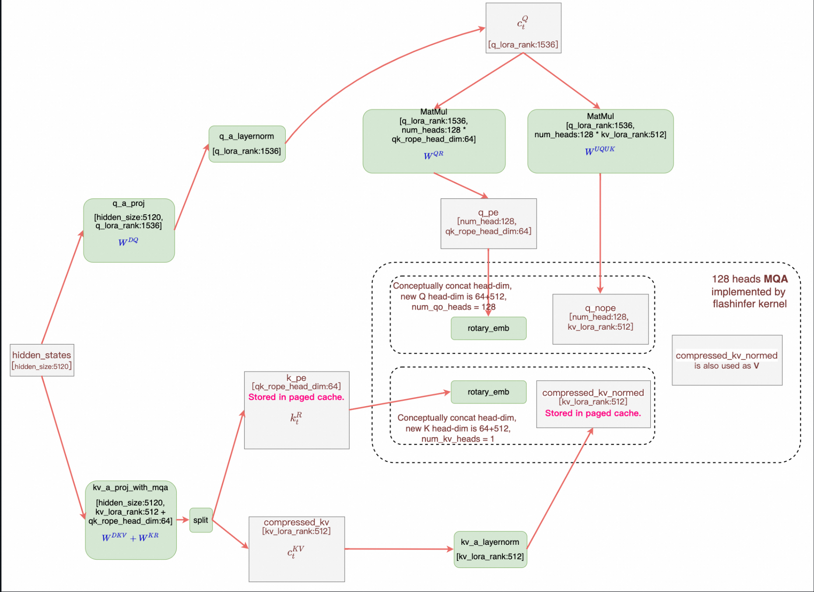

Multi-head Latent Attention (MLA)¶
Transformers¶
DeepSeekV3 Configuration¶
hidden_size = 7168
q_lora_rank = 1536
num_heads = 128
qk_nope_head_dim = 128
qk_rope_head_dim = 64
qk_head_dim = qk_nope_head_dim + qk_rope_head_dim = 192
v_head_dim = 128
DeepSeekV3 Attention¶
query_shape = (batch_size, seq_length, -1, self.qk_head_dim)
key_shape = (batch_size, seq_length, -1, self.qk_nope_head_dim + self.v_head_dim)
if self.q_lora_rank is None:
q_states = self.q_proj(hidden_states) # [b, s, h * qk_head_dim]
else:
q_states = self.q_b_proj(self.q_a_layernorm(self.q_a_proj(hidden_states)))
# q_a_proj: [b, s, d] -> [b, s, q_lora_rank] (16x down_proj)
# q_b_proj: [b, s, q_lora_rank] -> [b, s, h * qk_head_dim] (16x up_proj)
q_states = q_states.view(query_shape).transpose(1, 2) # [b, h, s, qk_head_dim]
q_pass, q_rot = torch.split(q_states, [self.qk_nope_head_dim, self.qk_rope_head_dim], dim=-1)
# q_pass: [b, h, s, qk_nope_head_dim]
# q_rot: [b, h, s, qk_rope_head_dim]
compressed_kv = self.kv_a_proj_with_mqa(hidden_states) # [b, s, kv_lora_rank + qk_rope_head_dim]
k_pass, k_rot = torch.split(compressed_kv, [self.kv_lora_rank, self.qk_rope_head_dim], dim=-1)
# k_pass: [b, s, kv_lora_rank]
# k_rot: [b, s, qk_rope_head_dim]
k_pass = self.kv_b_proj(self.kv_a_layernorm(k_pass)).view(key_shape).transpose(1, 2)
# k_pass: [b, h, s, qk_nope_head_dim + v_head_dim]
k_pass, value_states = torch.split(k_pass, [self.qk_nope_head_dim, self.v_head_dim], dim=-1)
# k_pass: [b, h, s, qk_nope_head_dim]
# value_states: [b, h, s, v_head_dim]
k_rot = k_rot.view(batch_size, 1, seq_length, self.qk_rope_head_dim) # [b, 1, s, qk_rope_head_dim]
cos, sin = position_embeddings
if self.config.rope_interleave: # support using interleaved weights for efficiency
q_rot, k_rot = apply_rotary_pos_emb_interleave(q_rot, k_rot, cos, sin)
else:
q_rot, k_rot = apply_rotary_pos_emb(q_rot, k_rot, cos, sin)
k_rot = k_rot.expand(*k_pass.shape[:-1], -1) # [b, h, s, qk_rope_head_dim]
query_states = torch.cat((q_pass, q_rot), dim=-1) # [b, h, s, qk_head_dim]
key_states = torch.cat((k_pass, k_rot), dim=-1) # [b, h, s, qk_head_dim]
# Normal attention
attn_output, attn_weights = attention_interface(
self,
query_states,
key_states,
value_states,
attention_mask,
dropout=0.0 if not self.training else self.attention_dropout,
scaling=self.scaling,
**kwargs,
)
MLA 的 KV Cache 里存的是 compressed_kv 和 k_rot，大大减少了 KV Cache 的所需空间。
以 DeepSeekV3 为例，每个 layer 每个 token 仅需一个长度为 192 的 Cache。
矩阵吸收¶


这里矩阵吸收并非直接将两个连续的矩阵乘合并成一个矩阵乘（这样做丧失了 LoRA 的意义），而是交换矩阵乘的计算顺序。
吸收 \(W^{UK}\) 和 \(W^{UQ}\)¶
其中 \(W^{UQ}\) 的形状是 [h * qk_head_dim (24576), q_lora_rank (1536)]，
\(W^{UK}\) 的形状是 [h * qk_head_dim (24576), kv_lora_rank (512)]。
矩阵吸收后，可以直接把 \(c_t^{KV}\) 看作是 \(K\) 进行 Attention 计算，而 \(c^{KV}\) 又是每个头共用的。 因此原先的 128 heads 128+64 head_dim 的 MHA 转化为了 128 heads 512+64 head_dim 的 MQA，减小了访存量，但增加了计算量。
我们在 prefill 时使用计算强度较小，访存量更大的 MHA。在 decode 时使用计算强度较大，访存量更小的 MQA。
吸收 \(W^{UV}\) 和 \(W^O\)¶
这个吸收过程稍微复杂一些。
v_t = einsum('hdc,blc->blhd', W_UV, c_t_KV) # (1)
o = einsum('bqhl,blhd->bqhd', attn_weights, v_t) # (2)
u = einsum('hdD,bhqd->bhD', W_o, o) # (3)
# 将上述三式合并，得到总的计算过程
u = einsum('hdc,blc,bqhl,hdD->bhD', W_UV, c_t_KV, attn_weights, W_o)
# 利用结合律改变计算顺序
o_ = einsum('bhql,blc->bhqc', attn_weights, c_t_KV) # (4)
o = einsum('bhqc,hdc->bhqd', o_, W_UV) # (5)
u = einsum('hdD,bhqd->bqD', W_o, o) # (6)
如此通过这个矩阵吸收，我们可以直接把 \(c_t^{KV}\) 看作是 V 进行 Attention 计算。 这样，我们的 KV Cache 只需存储 \(c_t^{KV}\) 和 \(k_pe\)。 \(K\) 由 \(c_t^{KV}\) 和 \(k_pe\) 拼接而成。 \(V\) 即为 \(c_t^{KV}\)。
RoPE¶
RoPE 作用在 \(c^{KV}\) 和 \(c^Q\) 上，使得 \(W^{UK}\) 和 \(W_{UQ}\) 不能再被吸收。
MLA 的方案是把 K 切成两部分， pass 部分不经过 RoPE，使两个矩阵能够被吸收；让 rot 部分不参与矩阵乘，经过 RoPE 后直接与 pass 部分 concat。
MLA in vLLM¶
class MultiHeadLatentAttention(CustomOp):
...
def forward_native(
self,
positions: torch.Tensor,
hidden_states: torch.Tensor,
) -> torch.Tensor:
q_c = None
kv_lora = None
if self.q_lora_rank is not None:
assert self.fused_qkv_a_proj is not None, \
"fused_qkv_a_proj is required when q_lora_rank is not None"
assert self.q_a_layernorm is not None, \
"q_a_layernorm is required when q_lora_rank is not None"
assert self.q_b_proj is not None, \
"q_b_proj is required when q_lora_rank is not None"
qkv_lora = self.fused_qkv_a_proj(hidden_states)[0]
q_c, kv_lora = qkv_lora.split(
[self.q_lora_rank, self.kv_lora_rank + self.qk_rope_head_dim],
dim=-1,
)
q_c = self.q_a_layernorm(q_c)
q = self.q_b_proj(q_c)[0]
else:
assert self.kv_a_proj_with_mqa is not None, \
"kv_a_proj_with_mqa is required when q_lora_rank is None"
assert self.q_proj is not None, \
"q_proj is required when q_lora_rank is None"
kv_lora = self.kv_a_proj_with_mqa(hidden_states)[0]
q = self.q_proj(hidden_states)[0]
kv_c, k_pe = kv_lora.split([self.kv_lora_rank, self.qk_rope_head_dim],
dim=-1)
kv_c_normed = self.kv_a_layernorm(kv_c)
q = q.view(-1, self.num_heads, self.qk_head_dim)
# Add head dim of 1 to k_pe
k_pe = k_pe.unsqueeze(1)
q[..., self.qk_nope_head_dim:], k_pe = self.rotary_emb(
positions, q[..., self.qk_nope_head_dim:], k_pe)
attn_out = self.mla_attn(
q,
kv_c_normed,
k_pe,
output_shape=(hidden_states.shape[0],
self.num_heads * self.v_head_dim))
return self.o_proj(attn_out)[0]
vLLM 把 q_a_proj 和 kv_a_proj_with_mqa 两个对 hidden_states 的矩阵乘融合成 fused_qkv_a_proj。
实现矩阵吸收，把 kv_c_norm 传进 mla_attn。
KV cache 存放的是 kv_c_normed 和 k_pe。
调用链：
DeepseekV2MLAAttention.mla_attn = MultiHeadLatentAttention(...)
->
MultiHeadLatentAttention.mla_attn = Attention(..., use_mla=True, ...)
->
selector.py dispatch attention backend
在 vLLM v1 中有 CutlassMLA, FlashattnMLA, FlashinferMLA, FlashMLA, TritonMLA 后端（for CUDA），而 v0 只支持 FlashMLA 和 Triton 后端。
vLLM 定义了一个通用接口 MLACommonImpl，实现了 forward 和 _forward_prefill 等方法，但是没有实现 _forward_decode。
各个后端的 MLA 实现都继承 MLACommonImpl，各自实现 _forward_decode。
我们关注 TritonMLAImpl._forward_decode 实现，其调用了 decode_attention_fwd。
由于矩阵吸收后等价于 MQA，接着调用 decode_attention_fwd_grouped：
_decode_att_m_fwd_decode_softmax_reducev_fwd